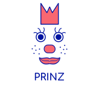

class: center, middle  # Serving Machine Learning Models Approaches --- ## Agenda .left-half[ - PMML 1.1 Introduction to PMML 1.2 Structure of a PMML file 1.3 Examples 1.4 Pros and cons ] -- .left-half[ - Mlflow 2.1 Introduction to Mlflow 2.2 Infrastructure of Mlfow 2.3 Examples 2.4 Pros and cons ] -- .left-half[ - H20 3.1 Introduction to H20 3.2 POJO vs MOJO 3.3 MOJO's graphical representation 3.4 Code examples ] --- ## Introduction to PMML PMML is an XML-based standard language used to represent models. PMML allows you to easily share models between different applications. You can train a model in one system, express it in PMML, and easily move it to another system. PMML incorporates data pre- and post-processing as well as the model itself. .centered-flex[] --- ## Introduction to PMML .left-half[ PMML defines specific elements for several predictive techniques, for example neural networks, decision trees, and clustering models. PMML also defines an element for representing multiple models and therefore can be used to represent model composition or ensemble. PMML is supported by numerous products, including Apache Spark and SAS or IBM statistical tools. ] .left-2-5[ <img src="https://upload.wikimedia.org/wikipedia/commons/f/f3/Apache_Spark_logo.svg"> <img src="https://upload.wikimedia.org/wikipedia/commons/1/10/SAS_logo_horiz.svg"> <img src="https://upload.wikimedia.org/wikipedia/commons/5/51/IBM_logo.svg"> ] --- ## Structure of a PMML file 1. Data Dictionary - identifies and defines input data fields 2. Mining Schema - defines the strategies for handling missing and outlier values 3. Data Transformations - define the computations required for pre-processing the raw input data into derived fields 4. Model Definition - defines the structure and the parameters used to build the model 5. Outputs - define the expected model outputs 6. Targets - define the post-processing steps to be applied to the model output 7. Model Explanation - defines the performance metrics obtained when passing test data through the model (as opposed to training data). 8. Model Verification - defines a sample set of input data records together with expected model outputs --- ## Examples ### The DataDictionary element ```xml <DataDictionary numberOfFields="3"> <DataField dataType="double" name="Value" optype="continuous"> <Interval closure="openClosed" rightMargin="60" /> </DataField> <DataField dataType="string" name="Element" optype="categorical"> <Value property="valid" value="Magnesium" /> <Value property="valid" value="Sodium" /> <Value property="valid" value="Calcium" /> <Value property="valid" value="Radium" /> </DataField> <DataField dataType="double" name="Risk" optype="continuous" /> </DataDictionary> ``` --- ## Examples ### A neural layer and its neurons ```xml <NeuralLayer numberOfNeurons="2"> <Neuron id="3" bias="-3.1808306946637"> <Con from="0" weight="0.119477686963504" /> <Con from="1" weight="-1.97301278112877" /> <Con from="2" weight="3.04381251760906" /> </Neuron> <Neuron id="4" bias="0.743161353729323"> <Con from="0" weight="-0.49411146396721" /> <Con from="1" weight="2.18588757615864" /> <Con from="2" weight="-2.01213331163562" /> </Neuron> </NeuralLayer> ``` --- ## Pros and cons .left-half[ Pros: - Portability and standardization - Decent coverage of standard model types from popular libraries - Model files themselves are semi-readable ] -- .right-half[ Cons: - No support for some modern libraries e.g. PyTorch - Model files are huge ] --- ## Introduction to H20 H2O supports POJO and MOJO model formats. - POJO - Plain Old Java Object - MOJO - Model ObJect, Optimized Both this formats allow to easily embed them into Java environment. The only required dependency for compilation and runtime is `h2o-genmodel.jar`. --- ## POJO vs MOJO .left-half[ POJO: - max 1G source file size - POJO don't support GLRM, Stacked Ensembles, or Word2Vec models - POJO predict cannot parse columns enclosed in double quotes (for example, “”2””) ] -- .left-half[ MOJO: - no source file size limit - MOJO supports more algorithms (Deep Learning, DRF, GBM, GLM, GAM, GLRM, K-Means, PCA, Stacked Ensembles, SVM, Word2vec, and XGBoost models and models generated by AutoML) - MOJOs are only supported for encodings that are either default or enum (TODO: explain) - generally faster and smaller (at large scale, MOJO is 20-25x smaller and 2-3x faster in "hot" scoring, 10-40x faster in "cold" scoring) ] --- ## MOJO's graphical representation H2O has build-in tool PrintMojo that allows to generate graphical representation of MOJO model. Example GBM model: .centered-flex[ <img src="http://docs.h2o.ai/h2o/latest-stable/h2o-docs/_images/gbm_mojo_graph.png" style="width: 30em; margin: 0;"> ] --- ## Code example - MOJO ```java MojoModel loadModel = MojoModel.load("GBM_model_R_1475248925871_74.zip"); EasyPredictModelWrapper model = new EasyPredictModelWrapper(loadModel); RowData row = new RowData(); row.put("AGE", "68"); row.put("RACE", "2"); row.put("DCAPS", "2"); row.put("VOL", "0"); row.put("GLEASON", "6"); BinomialModelPrediction pred = model.predictBinomial(row); ``` --- ## Code example - MOJO ```java GenModel rawModel = (GenModel) Class.forName(modelClassName) .newInstance(); EasyPredictModelWrapper model = new EasyPredictModelWrapper(rawModel); RowData row = new RowData(); row.put("Year", "1987"); row.put("Month", "10"); row.put("DayofMonth", "14"); row.put("DayOfWeek", "3"); row.put("CRSDepTime", "730"); row.put("UniqueCarrier", "PS"); row.put("Origin", "SAN"); row.put("Dest", "SFO"); BinomialModelPrediction pred = model.predictBinomial(row); ```